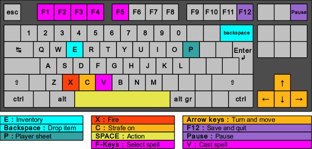
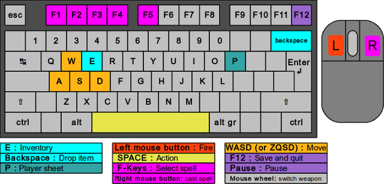

Comment jouer - Rends-moi mon Grimoire !
Ce jeu est un jeu de tir à la première personne. Votre navigateur ne gère pas le verrouillage du pointeur (Pointer Lock) : vous devez donc diriger votre personnage au clavier.

La souris sert tout de même pour l'interface (fenêtre d'inventaire...).
Ce jeu est un jeu de tir à la première personne. Votre navigateur gère le verrouillage du pointeur (Pointer Lock) : vous dirigez votre personnage au clavier et à la souris, comme dans la plupart des jeux de tir modernes.

Cliquez sur l'écran de jeu pour activer le verrouillage du pointeur.
Pour revenir au menu, [cliquez ici] ou appuyez sur ÉCHAP.